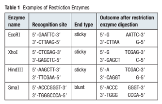
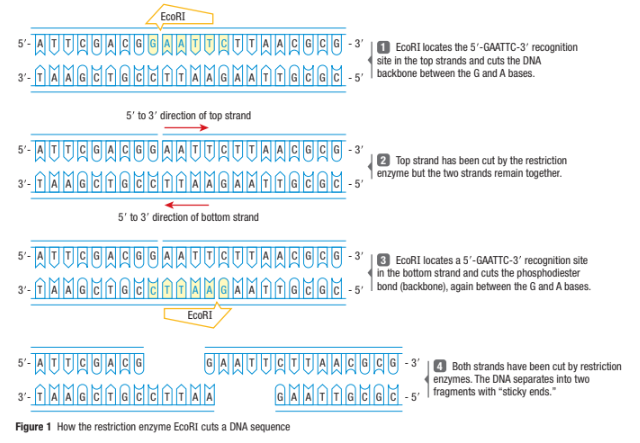
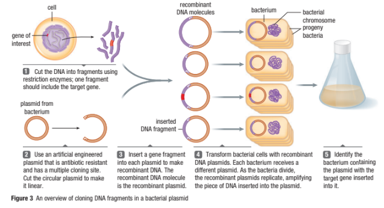

Genetic Technologies and Manipulating and Cloning DNA Part 1
Callout
How Can Genes Be Biological Tools?
On April 20, 2010, in the Gulf of Mexico, a huge amount of methane under high pressure blew out of an underwater oil well, causing an explosion. For the next three months, oil leaked from the broken wellhead into the Gulf, causing an ecological disaster. Over 800 000 000 L of oil leaked into the ocean, damaging marine ecosystems, wildlife, beaches, and local economies.
Initially, traditional oil spill cleanup technologies were used to try to contain the spill. Thousands of workers scrubbed the oil from the sand on the beaches. Commercial fishers turned their trawlers into oil-skimming machines. Chemicals called dispersants, which break up oil droplets so that the oil does not stay as one big “slick” on the surface, were poured onto the spill. However, dispersants are also a form of pollution, and even dispersed oil damages the environment and its inhabitants.
Gene Therapy
-
Gene therapy is an experimental technique that uses genes to treat or prevent disease. In the future, this technique may allow doctors to treat a disorder by inserting a gene into a patient's cells instead of using drugs or surgery.
Callout
Genetic Engineering
Genetic engineering is defined as the practice of purposely altering genes to achieve a specific outcome. This alteration is a modification that directly manipulates the genetic material of a living organism. It is usually reserved for plants and animals, but genetic engineering has led to specific medical treatment opportunities in humans as well.
Examples of Genetic Engineering
-
Insect-resistant cotton. In Australia, caterpillars of Helicoverpa armigera can strip cotton plants of their leaves and nibble their flower buds. ...
-
Podborer-resistant cowpea for Africa. ...
-
DHA canola. ...
-
Plants to produce industrial compounds. ..
-
Golden Bananas for Africa.
Biotechnological Applications
-
Biotechnological applications have been successfully used to clean pollutants from the environment most preferably through bioremediation and phytoremediation processes.
Diabetes mellitus
A disease in which the blood glucose level is too high because of the insufficient production or activity of the hormone insulin.
Approximately 5 % of all deaths are caused by diabetes.
Two types of Diabetes mellitus:
-
Type 1 diabetes
-
Type 2 diabetes
Diabetes can lead to many health complications, including blindness, organ problems, limb amputations, and early death.


Type 1 Diabetes
A type of diabetes caused by an inability to produce insulin. Many people with type 1 diabetes require insulin by mouth or by injection to prevent the disease from seriously damaging their body.
19.png)
A type of diabetes caused by low insulin or an inability to use insulin.
The two main risk factors associated with type 2 diabetes are a genetic predisposition and being overweight.
In North America, type 2 diabetes is on the rise.
Canadians eat more refined foods and sugar, and less natural foods and fiber, than ever before. As a consequence, more people are suffering from insulin resistance, obesity, and type 2 diabetes.
Diabetes can lead to many health complications, including blindness, organ problems, limb amputations, and early death.
Callout
Insulin
Insulin was isolated by two researchers, Dr. Frederick Banting and Dr. Charles Best, at the University of Toronto in 1922.
Helen Free, born a year after the discovery of insulin, invented a method to analyze the blood sugar by dip-test urinalysis.
Sweet urine was an indicator of diabetes.
This allowed people with diabetes to monitor their blood sugar level easily at home. These two innovations have vastly improved the lives of diabetics.
Insulin
Insulin was initially collected from the pancreas of pigs and cows. Some people, however, had allergic reactions to this insulin, even though it was necessary to keep them alive. Scientists attempted to mass-produce actual human insulin. They discovered that they could insert the human insulin gene into bacteria, and the bacteria would make human insulin.
15.png)
Genetic Engineering

Genetic engineering is the intentional production of new genes and alteration of genomes by the substitution or introduction of new genetic material.
It is now used to mass-produce human insulin economically and safely.
Bacteria are versatile tools for genetic engineers because they reproduce quickly and often, are relatively inexpensive to maintain, and contain plasmids (small circular pieces of DNA that replicate independently of the bacteria’s chromosome).
The bacteria Escherichia coli (commonly known as E. coli) are very common in the human body and are used to produce biosynthetic human insulin.
The human gene that codes for insulin is inserted into an E. coli plasmid.
The E. coli transcribes and translates the piece of human DNA to make the human protein insulin, which is then harvested from the bacteria. Safflowers are also used to produce human insulin.
After the human insulin gene in the plasmid is inserted into the E. coli or the safflower, the bacterial or plant DNA contains genes of two species and is called recombinant DNA.
Recombinant DNA is a DNA strand that is created using DNA pieces from two or more sources.
Restriction Enzymes
A restriction enzyme is an enzyme that cuts DNA at a specific location in a base sequence; also called restriction endonuclease.
The first step in genetic recombination is to isolate, or cut out, a DNA fragment that contains the desired gene.
Scientists use restriction enzymes (also called restriction endonucleases), which occur naturally in prokaryotic cells.
A restriction enzyme acts like molecular scissors, cutting a DNA molecule at specific locations.
Restriction Enzymes
The first step in genetic recombination is to isolate, or cut out, a DNA fragment that contains the desired gene. Scientists use restriction enzymes (also called restriction endonucleases), which occur naturally in prokaryotic cells. A restriction enzyme acts like molecular scissors, cutting a DNA molecule at specific locations. Each restriction enzyme recognizes a specific sequence of nucleotides on a DNA strand. This is known as the recognition site for that particular enzyme. When the restriction enzyme cuts the DNA molecule the pieces it creates are known as restriction fragments. Hopefully, one of the restriction fragments will contain the entire target gene, such as the gene for insulin.
Each restriction enzyme cuts (or digests) at only one recognition site and in only one direction. For example, the enzyme EcoRI binds to a recognition site with the base-pair sequence 59-GAATTC-39 (Table 1 and Figure 1, next page). EcoRI then cuts the phosphodiester bond in the DNA backbone between the G and the A. Notice that the recognition sites on the DNA are palindromic when you consider both strands (Figure 1). Another EcoRI enzyme makes the same cut in the complementary DNA strand. This leaves only a small number of the hydrogen bonds holding the DNA molecule together, allowing the DNA molecule to be easily separated, resulting in complementary “sticky” ends.
Two possible outcomes result from a restriction enzyme cutting a DNA molecule. If cuts are made straight across the strand, blunt ends are created. If cuts are made in a zigzag, sticky ends are created. For example, EcoRI produces sticky ends, whereas SmaI produces blunt ends (Table 1). Molecular biologists prefer to work with restriction enzymes that produce sticky ends because the DNA fragments that are created are easier to join to any other DNA strand that has been cut by the same enzyme.
In 1970, Dr. Hamilton Smith, of Johns Hopkins University School of Medicine, was wondering how some bacteria resisted viral infections when he accidentally discovered
restriction enzymes. Since then, many such enzymes have been cataloged. At least 2500 restriction enzymes, with specificity for about 200 target sequences, have been iso-
late, mostly from prokaryotic cells. About 200 of the most helpful restriction enzymes are available commercially for use in molecular biology laboratories.
DNA Ligase
DNA ligase is the enzyme that is used to join cut strands of DNA (Section 6.4). DNA ligase works best with sticky ends of DNA, but a second form, T4 DNA ligase, works well with blunt ends. The two DNA fragments must have overlapping complementary portions or be blunt ends that are properly aligned end to end. They will be complementary if they were both generated using the same restriction enzyme, since each restriction enzyme cuts specifically at one sequence of base pairs. Hydrogen bonds form between the complementary bases, but this is not a stable arrangement. The DNA is not fully linked until phosphodiester bonds form between the backbones of the double strands. DNA ligase is the enzyme that makes this happen. DNA ligase works, as many organic reactions do, by promoting a dehydration reaction. Thus, water molecules are released when DNA ligase joins the DNA strands.
Plasmids
The next tools that are needed for recombinant DNA techniques are plasmids, small circular pieces of DNA that are found in bacteria (Figure 2). Plasmids replicate independently of the chromosomal DNA. They often contain genes that code for specific proteins, such as proteins that provide resistance to antibiotics such as ampicillin or protect from the toxic effects of certain heavy metals. In fact, when you hear about bacteria that mutate quickly so that diseases become difficult to treat, it is often the plasmid DNA that is mutating. A cell that is able to take up foreign (often plasmid) DNA, such as a healthy E. coli cell, is called a competent cell. A plasmid that has been designed to be a vehicle for transferring foreign genetic materials into a cell is called a vector. The plasmid copy number, the number of copies of a plasmid within a bacterial cell, is variable and is characteristic of a particular plasmid. If a plasmid with a high copy number has been engineered to produce insulin, more insulin will be produced per cell because more copies of the insulin-producing gene are present.
If a fragment containing a target gene is created using the same restriction enzyme that a plasmid is cut with, the fragment will possess the same complementary ends as the linear plasmid. The foreign fragments and the plasmid fragments can be placed in the same solution, where they anneal because of the complementary sticky ends. DNA ligase is then added to re-form the phosphodiester bonds between the fragments, resulting in a new circular piece of DNA that carries the foreign gene fragment. The plasmid is now recombinant DNA, a combination of the original plasmid DNA and the foreign DNA. The plasmid can be introduced into a host cell (often a bacterial cell), where it will replicate to form many copies within the cell. The gene has been cloned because, as the plasmid replicates, many copies of the plasmid with recombinant DNA will be produced. Cloned genes are identical to multiple copies of a gene. Each copy of the plasmid will include a copy of the original inserted gene.
The gene can now begin to express its function. For example, if the insulin gene is in the plasmid, the host cell will begin to produce insulin. The procedure that is used by researchers to verify that bacteria are carrying a target gene is outlined in Figure 3. Refer back to this figure as you continue. Later in this section, you will learn how the bacteria with the target gene are identified (hybridization).
Callout
Restriction Maps
Plasmid mapping has revolutionized molecular biology. A restriction map is a diagram that shows the relative locations of all the known restriction enzyme recognition sites on a particular plasmid and the distances, in base pairs (bp), between the sites. This technique allows molecular biologists to determine which plasmids might be most suitable for a particular recombinant DNA procedure and to evaluate quickly the success of the cloning experiments.
Scientists often use a restriction map to determine which restriction enzyme they will use to cut the plasmid. Figure 4 shows a restriction map that illustrates two recognition sites for the restriction enzyme EcoRI and one site for HindIII. This map also shows the number of base pairs between the cut locations of each enzyme. When added up, we can see that the plasmid has a total length of 1800 base pairs.
Figure 5 shows the results of exposing the plasmid in Figure 4 to the two restriction enzymes on their own and in combination. EcoRI cuts the plasmid in two locations and produces two fragments, while HindIII cuts the plasmid in only one location and produces one fragment. When the plasmid is exposed to both restriction enzymes, three fragments are produced. Because plasmids are circular, the number of fragments is always equal to the number of cuts. In the following tutorial, you will construct restriction maps from the given information.



Transformation
Callout
Under specific conditions, plasmids enter bacterial cells, multiply, and express the foreign gene that has been inserted into the plasmid genome.
The successful introduction of DNA from another source is called Transformation.
The cell that has received the DNA is said to be transformed. If a bacterial cell is not able to take up a plasmid that contains foreign DNA, it can sometimes be made competent in a laboratory. One way to do this is to place the bacteria in a solution that contains calcium chloride and recombinant plasmids in an ice-water bath.
As the bacteria cool, the calcium ions stabilize the negative phosphate ions on the phospholipid bilayer of the cell membrane.
The CaCl2 solution is the heated quickly and re-cooled. The sudden change from cold to hot momentarily disrupts the membrane, allowing the plasmid to enter.
Callout
The cells are then kept at 37 °C for a period of time to stabilize and grow. After the cells have stabilized and grown, they are tested for ampicillin resistance. Those that contain a plasmid with the gene for ampicillin resistance grow in a medium that contains ampicillin.
This means that they were successfully made competent and transformed. If they do not grow and replicate, they do not contain the plasmid with the ampicillin-resistant gene, so the process was unsuccessful.
Hybridization: Identifying Bacterial Clones with target Genes
The technique of DNA hybridization is used to identify the cells that contain the introduced plasmids with the desired gene.
This gene can be identified by its unique DNA sequence because it will pair with a short, single-stranded complementary DNA molecule, called a hybridization probe.
Hybridization probe is a fragment of DNA that is used to detect the presence of complementary nucleotide sequences
For the gene with the recombinant DNA for insulin production, the hybridization probe is a piece of the DNA that codes for insulin, ranging in size from 15 to 2500 bases.
After the presence of the DNA for insulin production is confirmed, the bacteria are grown in huge quantities, enough to produce insulin on a commercial scale.